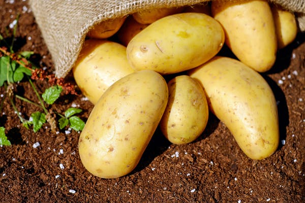

Potato farming is one of those businesses that can either make or break you. You can get good returns provided you are willing to learn how to navigate your way up or you can literary “burn” your whole investment in less than 3 months. Read the next few paragraphs to find out the truth about this age-old business idea. Potatoes are highland crops and they grow well in most major parts of the nation including Molo, Kinangop, Taita Hills, Yatta, Timboroa and parts of Laikipia.
The first step is to find land in one of the high production areas. If you live in Nairobi area then you can think of going to places like Kinangop or North Nyandarua (an hour’s drive from the City). Remember, you don’t have to be a land owner to get started as you can simply lease. Currently, the cost of leasing a good chunk of land in Nyandarua about 1 Kilometre from the tarmac is Ksh15,000 per year
Now that you have found a nice piece of land, the next step is to till it and prepare furrows ready for planting. Here again you don’t have to do all the work yourself. You only need to hire a few village labourers and delegate the job to them. If you’re too busy with your current job or business, you can pick one of your idle uncles from the village and hire them as the farm manager. Another thing to do is to get some manure. Manure is normally sold in lorries (mostly from Masai land) and a good load goes for Ksh20,000 delivered to your place.
You may be tempted to take a short-cut by buying seeds from other farmers but you should know that this is the biggest mistake that most farmers make. If you want to get the best harvest, then you have to get the best disease-free seeds. A good source of these seeds is The Kisima Foundation…this is an organization that allows you to even pay by Mpesa and they deliver right outside your farm. The average cost of a bag of certified potato seeds is Ksh3,000.
Only buy certified seeds Talk to local farmers about which breeds do well in the area around your farm. Examples of potato breeds are Tigoni, Kenya Mpya, Asante and Shangi
The good thing with potatoes is that they only take 90 days to mature. But in order for that to happen (and in order for the yield to be profitable) you need to ensure that your crop is well watered either through rain or irrigation. Also, be sure to apply DAP fertilizer in combination with manure. Take care of the farm by weeding it. Lastly, you will need to invest in chemicals and yield boosters – and these you can buy from the agrovet shops.
It is one thing to plant potatoes; selling them and getting the best prices is another. Let me tell you something…in the potato world, there exists some sharp individuals called brokers. They come with lorries and move from door to door buying farm produce at some punitive prices. The good thing with brokers is that they save the farmer the hassle of finding the market, but the bad thing is that the prices they give are sometimes unsustainable and that explains why many first-time potato farmers “burn”. So what’s the secret to dealing with brokers? The first strategy is to plant your crop at around December so that you harvest it at around February or March when there is short supply and prices are favorable. For instance, right now a bag of potatoes is going for Ksh4,000 and above. However, the same bag of potato may fluctuate and lower down at the month of July.
In total, you will require about Ksh80,000 for an acre of potatoes (from planting to harvesting)
The current market price for a sack of Shangi potatoes is Ksh4,000. An acre of land can produce 80 bags of potatoes in 3 months. So let’s do the math.
Ksh4,000 x 80 bags = Ksh320,000 (Revenue)
Ksh320,000 (Revenue) – Ksh80,000 (Expenses) = Ksh240,000 (Net Profit) in just 90 days.
Note that the recommended size of potato bag is 110Kilograms according to the National Potato Council of Kenya.
Potato farming is a good venture. It is not a get-rich-quick scheme (though) and majority of first time investors may lose their money due to obvious mistakes. On a positive note, if you have read this article to the end you can now proceed to make an investment confident of making returns. All it takes is a bit of discipline, hardwork and strategy.